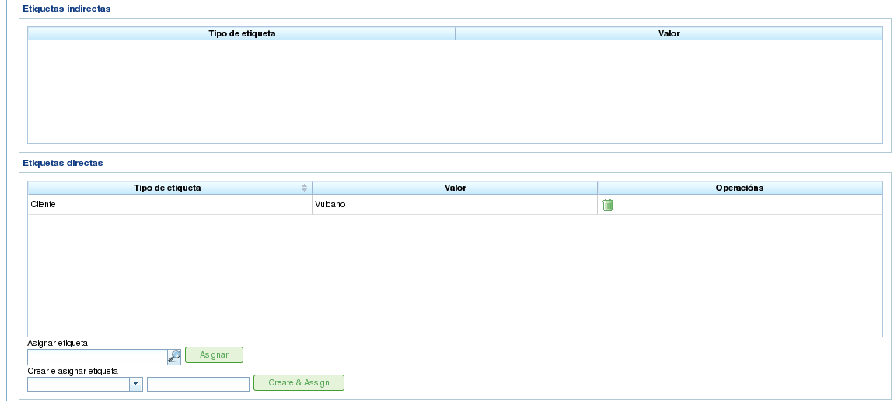

Projects and Project Elements
Contents
Projects represent the work to be performed by users of the program. Each project corresponds to a project that the company will offer to its clients.
A project consists of one or more project elements. Each project element represents a specific part of the work to be done and defines how the work on the project should be planned and executed. Project elements are organized hierarchically, with no limitations on the depth of the hierarchy. This hierarchical structure allows for the inheritance of certain features, such as labels.
The following sections describe the operations that users can perform with projects and project elements.
Projects
A project represents a project or work requested by a client from the company. The project identifies the project within the company's planning. Unlike comprehensive management programs, LibrePlan only requires certain key details for a project. These details are:
- Project Name: The name of the project.
- Project Code: A unique code for the project.
- Total Project Amount: The total financial value of the project.
- Estimated Start Date: The planned start date for the project.
- End Date: The planned completion date for the project.
- Person in Charge: The individual responsible for the project.
- Description: A description of the project.
- Assigned Calendar: The calendar associated with the project.
- Automatic Generation of Codes: A setting to instruct the system to automatically generate codes for project elements and hour groups.
- Preference between Dependencies and Restrictions: Users can choose whether dependencies or restrictions take priority in case of conflicts.
However, a complete project also includes other associated entities:
- Hours Assigned to the Project: The total hours allocated to the project.
- Progress Attributed to the Project: The progress made on the project.
- Labels: Labels assigned to the project.
- Criteria Assigned to the Project: Criteria associated with the project.
- Materials: Materials required for the project.
- Quality Forms: Quality forms associated with the project.
Creating or editing a project can be done from several locations within the program:
- From the "Project List" in the Company Overview:
- Editing: Click the edit button on the desired project.
- Creating: Click "New project."
- From a Project in the Gantt Chart: Change to the project details view.
Users can access the following tabs when editing a project:
Editing Project Details: This screen allows users to edit basic project details:
- Name
- Code
- Estimated Start Date
- End Date
- Person in Charge
- Client
- Description

Editing Projects
Project Element List: This screen allows users to perform several operations on project elements:
- Creating new project elements.
- Promoting a project element one level up in the hierarchy.
- Demoting a project element one level down in the hierarchy.
- Indenting a project element (moving it down the hierarchy).
- Unindenting a project element (moving it up the hierarchy).
- Filtering project elements.
- Deleting project elements.
- Moving an element within the hierarchy by dragging and dropping.

Project Element List
Assigned Hours: This screen displays the total hours attributed to the project, grouping the hours entered in the project elements.

Assigning Hours Attributed to the Project by Workers
Progress: This screen allows users to assign progress types and enter progress measurements for the project. See the "Progress" section for more details.
Labels: This screen allows users to assign labels to a project and view previously assigned direct and indirect labels. See the following section on editing project elements for a detailed description of label management.

Project Labels
Criteria: This screen allows users to assign criteria that will apply to all tasks within the project. These criteria will be automatically applied to all project elements, except those that have been explicitly invalidated. The hour groups of project elements, which are grouped by criteria, can also be viewed, allowing users to identify the criteria required for a project.

Project Criteria
Materials: This screen allows users to assign materials to projects. Materials can be selected from the available material categories in the program. Materials are managed as follows:
- Select the "Search materials" tab at the bottom of the screen.
- Enter text to search for materials or select the categories for which you want to find materials.
- The system filters the results.
- Select the desired materials (multiple materials can be selected by pressing the "Ctrl" key).
- Click "Assign."
- The system displays the list of materials already assigned to the project.
- Select the units and the status to assign to the project.
- Click "Save" or "Save and continue."
- To manage the receipt of materials, click "Divide" to change the status of a partial quantity of material.

Materials Associated with a Project
Quality: Users can assign a quality form to the project. This form is then completed to ensure that certain activities associated with the project are carried out. See the following section on editing project elements for details on managing quality forms.

Quality Form Associated with the Project
Editing Project Elements
Project elements are edited from the "Project element list" tab by clicking the edit icon. This opens a new screen where users can:
- Edit information about the project element.
- View hours attributed to project elements.
- Manage progress of project elements.
- Manage project labels.
- Manage criteria required by the project element.
- Manage materials.
- Manage quality forms.
The following subsections describe each of these operations in detail.
Editing Information about the Project Element
Editing information about the project element includes modifying the following details:
- Project Element Name: The name of the project element.
- Project Element Code: A unique code for the project element.
- Start Date: The planned start date of the project element.
- Estimated End Date: The planned completion date of the project element.
- Total Hours: The total hours allocated to the project element. These hours can be calculated from the added hour groups or entered directly. If entered directly, the hours must be distributed among the hour groups, and a new hour group created if the percentages do not match the initial percentages.
- Hour Groups: One or more hour groups can be added to the project element. The purpose of these hour groups is to define the requirements for the resources that will be assigned to perform the work.
- Criteria: Criteria can be added that must be met to enable generic assignment for the project element.

Editing Project Elements
Viewing Hours Attributed to Project Elements
The "Assigned hours" tab allows users to view the work reports associated with a project element and see how many of the estimated hours have already been completed.

Hours Assigned to Project Elements
The screen is divided into two parts:
- Work Report List: Users can view the list of work reports associated with the project element, including the date and time, resource, and number of hours devoted to the task.
- Use of Estimated Hours: The system calculates the total number of hours devoted to the task and compares them with the estimated hours.
Managing Progress of Project Elements
Entering progress types and managing project element progress is described in the "Progress" chapter.
Managing Project Labels
Labels, as described in the chapter on labels, allow users to categorize project elements. This enables users to group planning or project information based on these labels.
Users can assign labels directly to a project element or to a higher-level project element in the hierarchy. Once a label is assigned using either method, the project element and the related planning task are associated with the label and can be used for subsequent filtering.

Assigning Labels for Project Elements
As shown in the image, users can perform the following actions from the Labels tab:
- View Inherited Labels: View labels associated with the project element that were inherited from a higher-level project element. The planning task associated with each project element has the same associated labels.
- View Directly Assigned Labels: View labels directly associated with the project element using the assignment form for lower-level labels.
- Assign Existing Labels: Assign labels by searching for them among the available labels in the form below the direct label list. To search for a label, click the magnifying glass icon or enter the first letters of the label in the text box to display the available options.
- Create and Assign New Labels: Create new labels associated with an existing label type from this form. To do this, select a label type and enter the label value for the selected type. The system automatically creates the label and assigns it to the project element when "Create and assign" is clicked.
Managing Criteria Required by the Project Element and Hour Groups
Both a project and a project element can have criteria assigned that must be met for the work to be performed. Criteria can be direct or indirect:
- Direct Criteria: These are assigned directly to the project element. They are criteria required by the hour groups on the project element.
- Indirect Criteria: These are assigned to higher-level project elements in the hierarchy and are inherited by the element being edited.
In addition to the required criteria, one or more hour groups that are part of the project element can be defined. This depends on whether the project element contains other project elements as child nodes or if it is a leaf node. In the first case, information about hours and hour groups can only be viewed. However, leaf nodes can be edited. Leaf nodes work as follows:
- The system creates a default hour group associated with the project element. The details that can be modified for an hour group are:
- Code: The code for the hour group (if not automatically generated).
- Criterion Type: Users can choose to assign a machine or worker criterion.
- Number of Hours: The number of hours in the hour group.
- List of Criteria: The criteria to be applied to the hour group. To add new criteria, click "Add criterion" and select one from the search engine that appears after clicking the button.
- Users can add new hour groups with different features than previous hour groups. For example, a project element might require a welder (30 hours) and a painter (40 hours).

Assigning Criteria to Project Elements
Managing Materials
Materials are managed in projects as a list associated with each project element or a project in general. The list of materials includes the following fields:
- Code: The material code.
- Date: The date associated with the material.
- Units: The required number of units.
- Unit Type: The type of unit used to measure the material.
- Unit Price: The price per unit.
- Total Price: The total price (calculated by multiplying the unit price by the number of units).
- Category: The category to which the material belongs.
- Status: The status of the material (e.g., Received, Requested, Pending, Processing, Cancelled).
Working with materials is done as follows:
- Select the "Materials" tab on a project element.
- The system displays two sub-tabs: "Materials" and "Search materials."
- If the project element has no assigned materials, the first tab will be empty.
- Click "Search materials" in the lower-left part of the window.
- The system displays the list of available categories and associated materials.

Searching for Materials
- Select categories to refine the material search.
- The system displays the materials that belong to the selected categories.
- From the materials list, select the materials to assign to the project element.
- Click "Assign."
- The system displays the selected list of materials on the "Materials" tab with new fields to complete.

Assigning Materials to Project Elements
- Select the units, status, and date for the assigned materials.
For subsequent monitoring of materials, it's possible to change the status of a group of units of the received material. This is done as follows:
- Click the "Divide" button on the list of materials to the right of each row.
- Select the number of units to divide the row into.
- The program displays two rows with the material divided.
- Change the status of the row containing the material.
The advantage of using this dividing tool is the ability to receive partial deliveries of material without having to wait for the entire delivery to mark it as received.
Managing Quality Forms
Some project elements require certification that certain tasks have been completed before they can be marked as complete. This is why the program has quality forms, which consist of a list of questions that are considered important if answered positively.
It's important to note that a quality form must be created beforehand to be assigned to a project element.
To manage quality forms:
Go to the "Quality forms" tab.

Assigning Quality Forms to Project Elements
The program has a search engine for quality forms. There are two types of quality forms: by element or by percentage.
- Element: Each element is independent.
- Percentage: Each question increases the progress of the project element by a percentage. The percentages must be able to add up to 100%.
Select one of the forms created in the administration interface and click "Assign."
The program assigns the chosen form from the list of forms assigned to the project element.
Click the "Edit" button on the project element.
The program displays the questions from the quality form in the lower list.
Mark the questions that have been completed as achieved.
- If the quality form is based on percentages, the questions are answered in order.
- If the quality form is based on elements, the questions can be answered in any order.